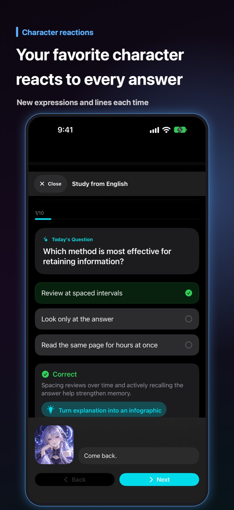
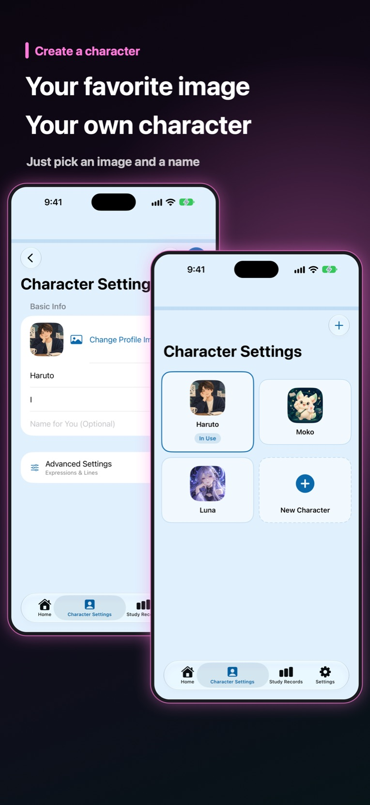
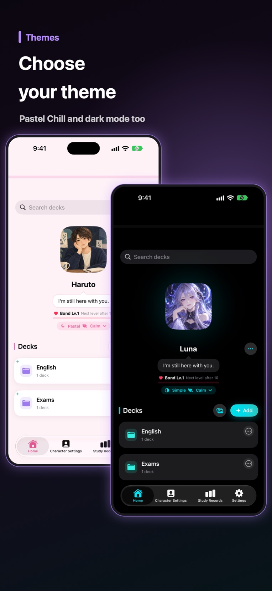
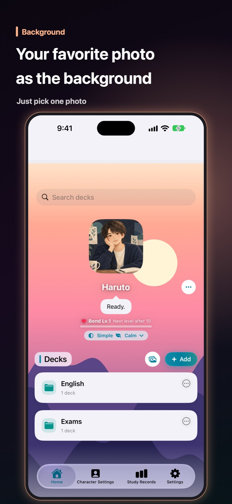
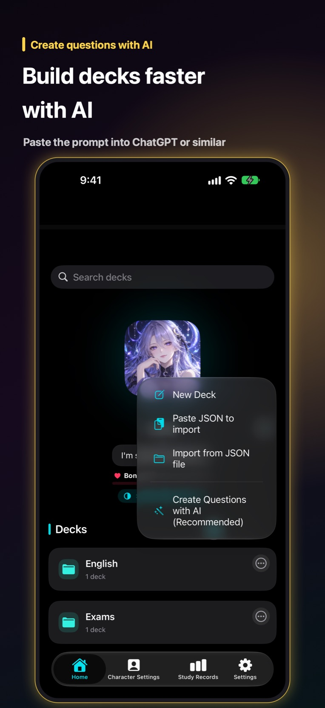
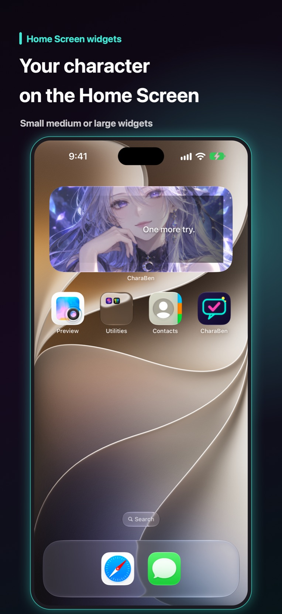

Create your own study partner
Make a character with your own image, name, lines, and audio. Reposition and zoom to crop your image, with transparent backgrounds preserved.
iPhone STUDY APP
Create a study partner from an image of your favorite character or oshi. As you work through your own quizzes and flashcards, it reacts with expressions and lines. Choose a theme and a background photo to make it your own.
Made for iPhone · Free to start · No account required

FEATURES
Make a character with your own image, name, lines, and audio. Reposition and zoom to crop your image, with transparent backgrounds preserved.
Expressions and lines change for correct answers, mistakes, streaks, and results. Choose a speaking style from line presets, including Mysterious.
Create multiple-choice questions and flashcards. Paste the included prompts into a generative AI service such as ChatGPT and import the questions and lines it creates. CharaBen does not connect directly to an AI service.
THEMES & EFFECTS
There are four themes. Effects and the background work with any of them.
A clean default theme, with dark mode support.
A soft pink, lavender, and mint palette. After studying, save today's record as a Today's Card image.
A fresh palette of light blue and yellow-green.
A glowing neon palette. Switch on Intense effects to light up questions and choices too.
EFFECTS
Set the effect for correct answers to None, Calm, or Lively. Calm shows a spreading ripple, and Lively adds a combo effect with confetti and character cut-ins.
BACKGROUND
Choose Standard or Photo for the background. Pick one photo and it appears behind the home and study screens.
INFOGRAPHICS
Turn question explanations and deck overviews into infographics featuring your character, in Simple, Gaming, or Pastel style, and save them for quick review. You can also copy prompts for creating infographic images with an external generative AI service.
APP SCREENS





ON YOUR DEVICE
Question sets, study history, character settings, images, audio, the background photo, and saved infographics are stored locally. You can also export a backup and save it to iCloud Drive whenever needed. No account is required, and CharaBen does not connect directly to external AI services.
PRIVACY POLICY
Last updated: September 14, 2026 · This translation is provided for reference; the Japanese version is the original policy.
CharaBen stores question sets, questions and answers, learning records, review status, folder, archive and pin settings, character settings, names, images, expression images, audio, display and notification settings, onboarding status, and information needed for backup and restore locally on your device.
This information is used for learning, display, review, backup, and restore features. It is not collected by or sent to servers operated by the Developer. CharaBen does not require account registration or use its own analytics SDK. You can export a backup file and choose external storage such as iCloud Drive as its destination. In that case, the storage provider’s policy applies.
CharaBen displays banner ads through Google LLC’s Google Mobile Ads SDK (AdMob) to support operating costs. Advertising providers may use IP address and approximate location, device or SDK identifiers, technical information, ad interaction information, and diagnostic and performance information for ad delivery, fraud prevention, measurement, and quality improvement.
At launch, CharaBen does not request App Tracking Transparency permission and does not track users for IDFA-based tracking advertising. See the Google Privacy Policy and Google Mobile Ads SDK data disclosure for details.
An optional non-consumable in-app purchase permanently removes ads. Apple processes purchases and restores; the Developer does not receive payment card information.
If you enable study reminders, CharaBen uses local notifications on your device. Notification content and settings are not sent to the Developer’s servers.
Files selected as character images, expression images, or audio are stored on your device and are not sent to the Developer. Imported question JSON and backup files are also processed on your device.
CharaBen can copy prompts for creating question JSON or infographic images with an external AI service, but it does not connect directly to an external AI service. Information entered there is subject to that service’s policy.
Except for the advertising provider handling described above, the Developer does not provide your learning content, character settings, images, audio, or backup contents to third parties.
Where parental consent is required, CharaBen is intended to be used with the involvement of a parent or guardian in accordance with applicable law. Because the app includes advertising, please review the App Store age rating and device content restrictions.
Contact charaben.support@gmail.com with policy questions. The Developer may update this policy in response to changes in law, advertising SDK specifications, or app features. Material changes will be announced on this page or in the app.